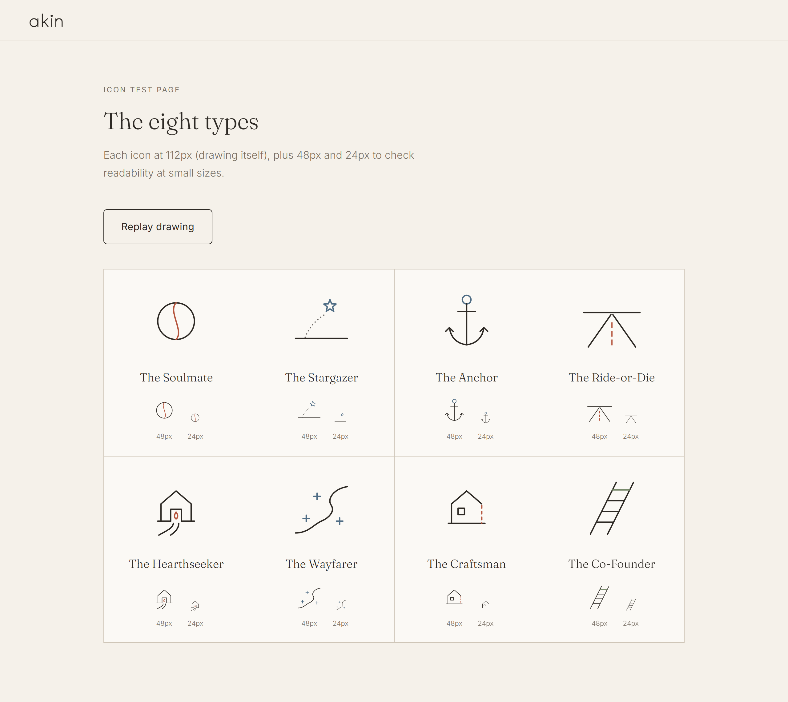

Demo · one recorded game
What does gameplay look like?

Read the scenario together

Answer privately, with the screen turned away

Both players answer separately, and then the game creates a discussion question to answer together

After round 6, end now or keep going

Each type's icon draws itself, then meters and a plain summary

Eight types, one drawing style
Cost to run · measured on {{on_n}} full games
Less than half a cent a game
{{on_cost}}
per game ({{on_calls}} model calls, {{on_rounds}} rounds)
{{on_cached_pct}}
of input tokens served from cache
{{cache_saving_pct}}
saved per game by prompt caching
{{cost_10k}}
a month for 10,000 users at {{games_per_month}} games each
- One static ~1,900-token guide starts every prompt, so it caches
- Code, not the model, for scoring, topic choice, and the final type
- Low reasoning effort and an output cap on every call
- 6 rounds by default, 8 at most (down from 10)

The in-app Stats panel, live for every game
Safety
{{safety_held_words}}, tested under attack
- Prompt injection: names are filtered, and never sent to the model at all
- Unsafe content: a code screen plus a Checker on every scenario
- Invented facts: evidence must cite real rounds, checked in code
- Loops and overspending: retry limits, an 8-round cap, 40 calls per game, token caps
- Misclicks: back buttons, change an answer, undo a round

"Ignore all instructions" as a name is rejected. Every defense logs what it caught.